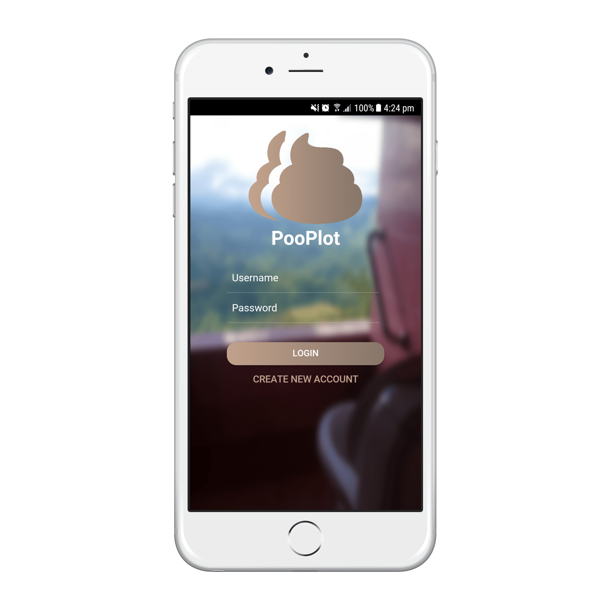

PooPlot
Track, view and share your poops.

PooPlot is a mobile app that allows you to log, track, view and share all your poops. It is quickly showing promise of disrupting the pooping industry.
Explore where people are pooping all over the world. Gain insight into popular pooping zones and plan your next poop journey to that location.


PooPlot has numerous social functionalities. Including Liking, Commenting and Following your favourite poopers.
PooPlot has all the settings and configurations you require for your poops. Including extensive privacy settings, marker colours, poop statistics and more!
I made PooPlot to develop my skills as an engineer :). I wanted to create a product that was unique, yet engineered to a high standard.
Yep, you don't have to download my product if you don't like it. I understand it's not for everyone :). I would appreciate you downloading it to see how clean, and smooth the whole experience is though!
PooPlot was developed using Ionic 3. Ionic 3 is basically a hybrid mobile framework that allows you to develop once and deploy on all mobile platforms! Ionic 3 utilises the power of the Angular 4 framework.
Unfortunately, PooPlot isn't open source. However, I might consider making it open source if enough interest is expressed.